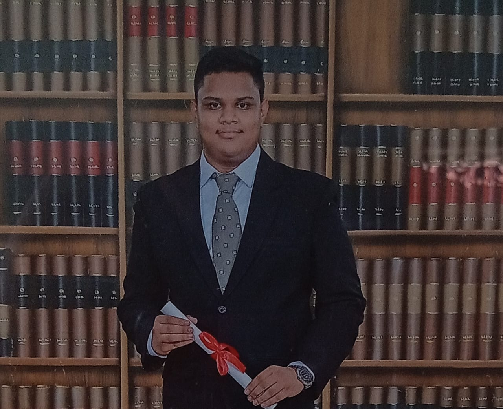

Resume
Education
- 2023 (January Intake) - present: Informatics Institute of Technology in collaboration with University of Westminster
- 2022 (May Intake): Completed Foundation Program in Computing
- 2018-2021: Completed G.C.E O/L at St. Benedict’s College Colombo
Technical Skills
- Python
- MySQL
- XML
- Pandas
- PHP/li>
Soft Skills
- Management Skills
- Creativity
- Digital Marketing
- Critical Thinking
- Leadership
Achievements
- Selected for the final stage of Cutting-Edge competition in 2022 organized by IIT.
References
- Mr. H.M.G.C Herath, Chief Manager, Bank Of Ceylon - 077 3572695
- Mr. K.M.C.N. Kodithuwakku, Assistant General Manager, Bank Of Ceylon - 077 726 6316